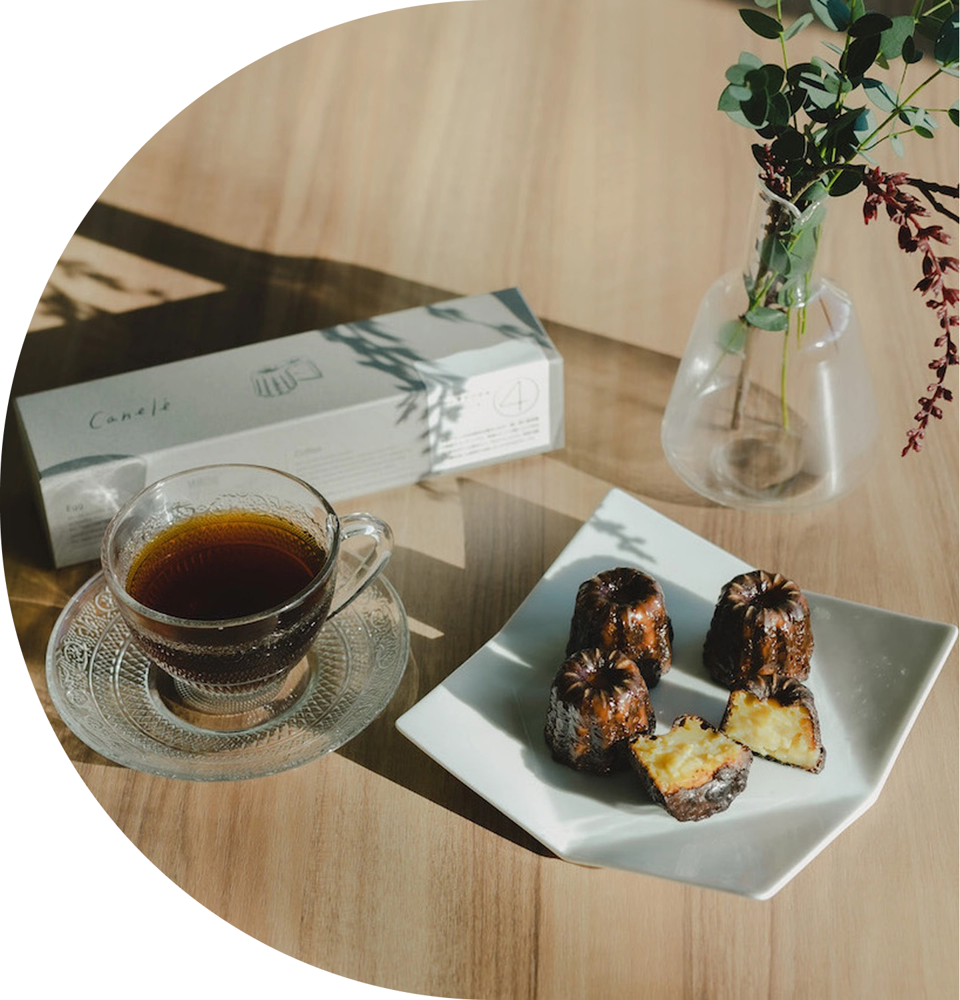
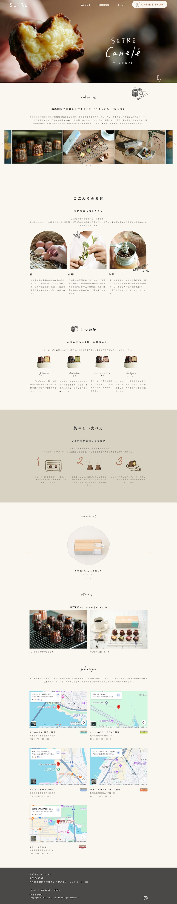
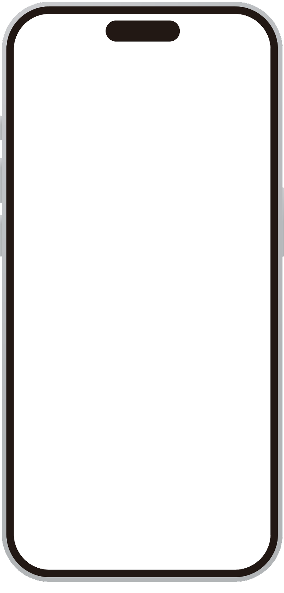
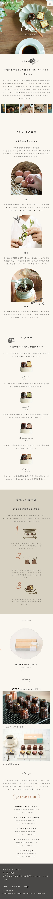

制作実績
パティシエ監修カヌレの魅力を伝えるランディングページを制作させていただきました

ホテルセトレが手がける、パティシエ監修のこだわりカヌレの販売・認知拡大を目的としたランディングページです。 30代以上の落ち着いた年齢層をターゲットに、ホテルの上質な世界観を守りながら、カヌレの「美味しそうなイメージ」と「素材へのこだわり」がまっすぐ伝わるWebサイトを目指しました。




| 目的 | パティシエ監修によるカヌレの高級感・こだわりを視覚的に伝え、購買意欲を高めること。また、ギフトや自分へのご褒美としての価値を定着させること。 |
|---|---|
| ターゲット | 30代〜のほんのり贅沢な暮らしや本物志向を好む大人の方、落ち着いた年齢層のギフトを探している方。 |
| 担当範囲 | 企画構成立案 ｜ デザイン ｜ コーディング |
| 制作期間 | １ヶ月 |
| 使用ツール | Photoshop ｜ Visual Studio Code |
カヌレの質感や断面のしっとり感が一瞬で伝わるよう、写真を大胆に大きく配置。焼き立ての香りが漂うようなシズル感を最優先しました。
カヌレの焼き色をイメージした深みのあるブラウンをベースに、落ち着いたトーンで統一。贅沢な余白によって、ホテルブランドらしい高級感を表現しています。
スマホでも写真の魅力が損なわれないレスポンシブ対応を徹底。スクロールに合わせて画像が優しく浮かび上がる演出を加え、ホテルのゆったりとした時間の流れを表現しました。